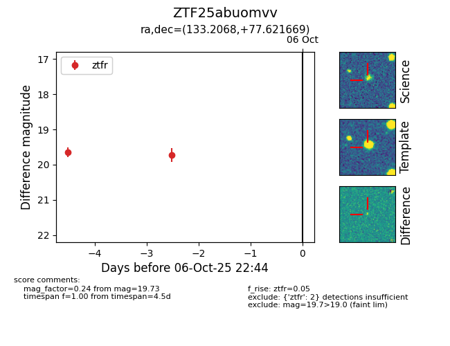

FINK: ZTF25abuomvv
Lasair: ZTF25abuomvv
ALeRCE: ZTF25abuomvv
ZTF25abuomvv (ztf,fink)
equatorial (ra, dec) = (133.2068,+77.62167)
galactic (l, b) = (135.6464,+32.80455)

last ztfr=19.73
2 ztfr detections